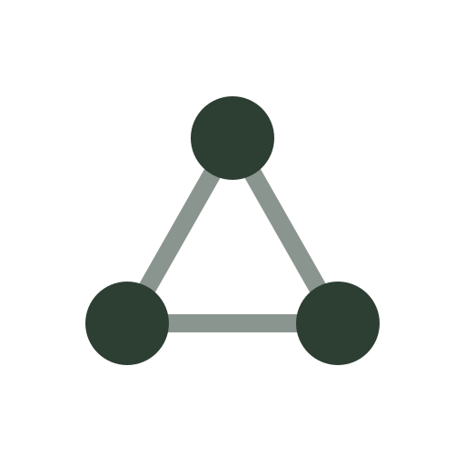
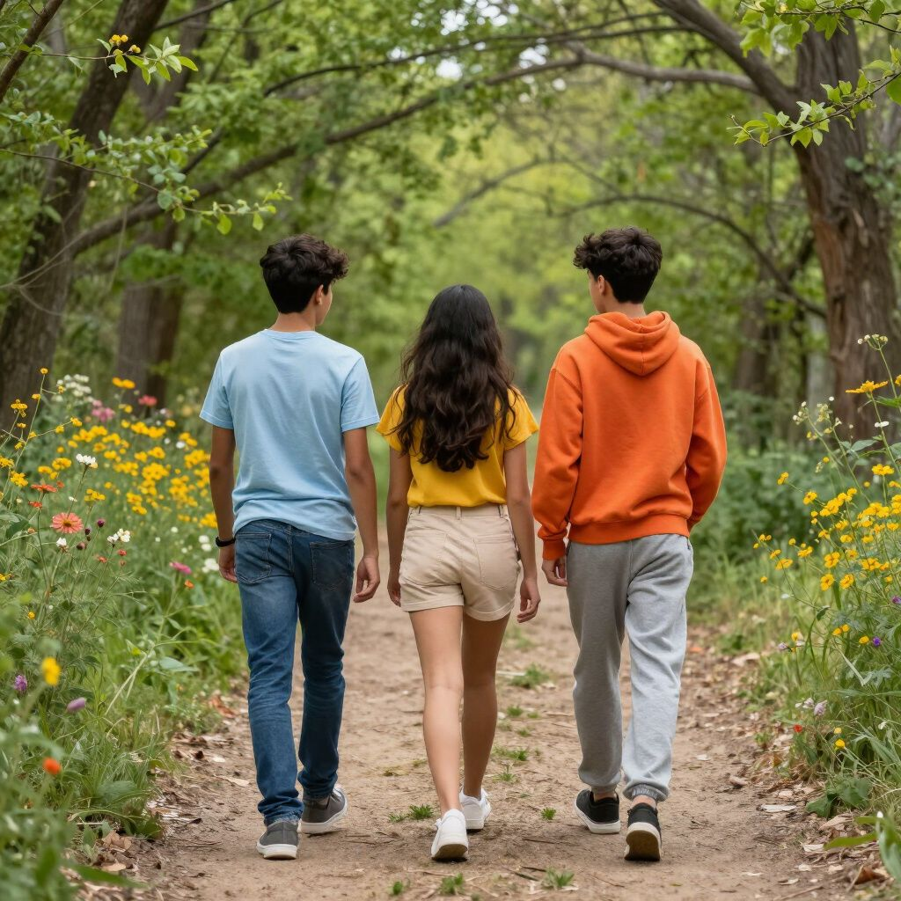
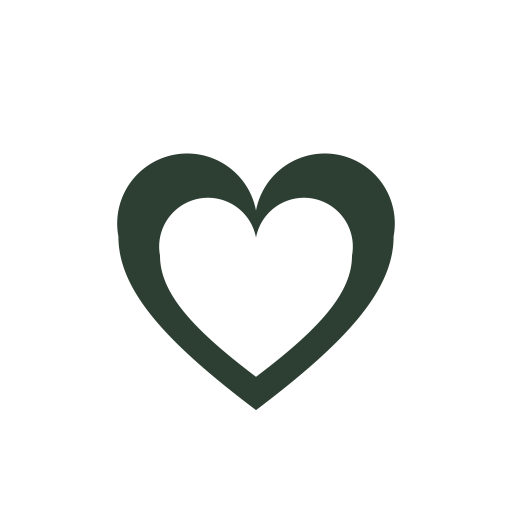
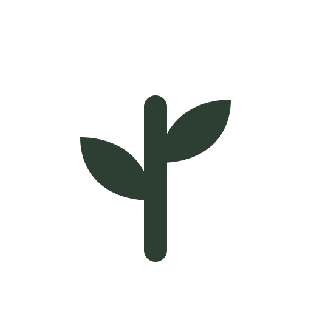

Hacer, sentir y pensar
La teoría y la práctica van de la mano. Cultivar, construir y crear.
Quiénes somos
Somos una asociación de madres y padres que decidimos crear la escuela que soñamos para nuestros hijos: una secundaria comunitaria y sin fines de lucro en Zapotal, Oaxaca. Nos une la convicción de que se aprende mejor cuando el hacer, el sentir y el pensar caminan juntos y de que una comunidad que comparte valores puede sostener una educación distinta. Con ese propósito abrimos 1º y 2º grado de secundaria para el ciclo 2026–2027.

Brindar educación en un ambiente que busca estimular el pensar crítico, la conciencia social y la creatividad, además de promover la curiosidad y el amor por el aprendizaje.
Despertando y desarrollando el potencial humano de nuestros jóvenes a través de hacer, sentir y pensar para traer adultos inspirados y éticos a nuestra sociedad.
Construir día a día un espacio que atienda las necesidades reales de los jóvenes. Darles las herramientas para crecer con claridad y respeto a sus propios procesos, con empatía y respeto hacia los demás y la vida misma.
Ofrecerles un ejemplo de comunidad activa, encontrando el equilibrio compartiendo espacios autogestivos y de enseñanzas vivenciales.
Nuestros valores
Lo que encontrarás con nosotros

La teoría y la práctica van de la mano. Cultivar, construir y crear.

Un comité de familias compartiendo materiales, alimentos y decisiones.

El aula se extiende al huerto, al bambú y al entorno de Zapotal.
Formar adultos inspirados, con empatía y herramientas para decidir con claridad.
Equipo
Un equipo comprometido con la educación comunitaria.

Dirección y coordinación
Maestra principal
Responsable de gestión del patrimonio

Responsable de comunicación y difusión
Relaciones públicas
Maestro de construcción y carpintería

Consejero y maestro de emprendimiento

Consejera y maestra de dibujo y arte
Las primeras familias dejan una huella indeleble en la forma de la escuela. Platiquemos.